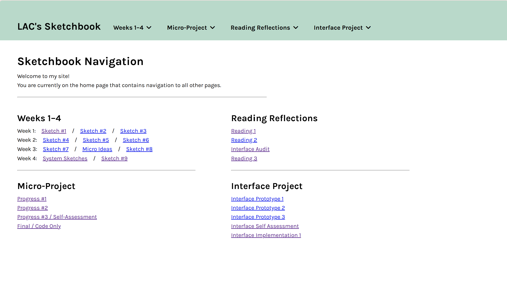
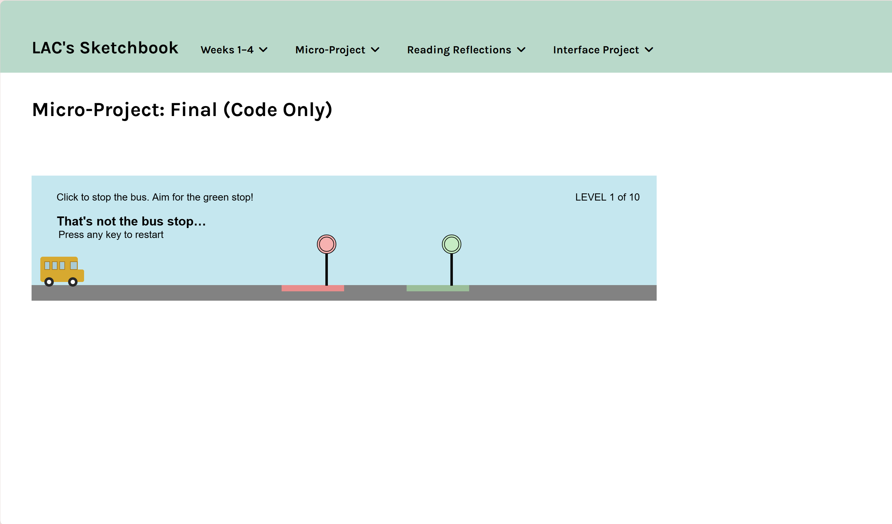
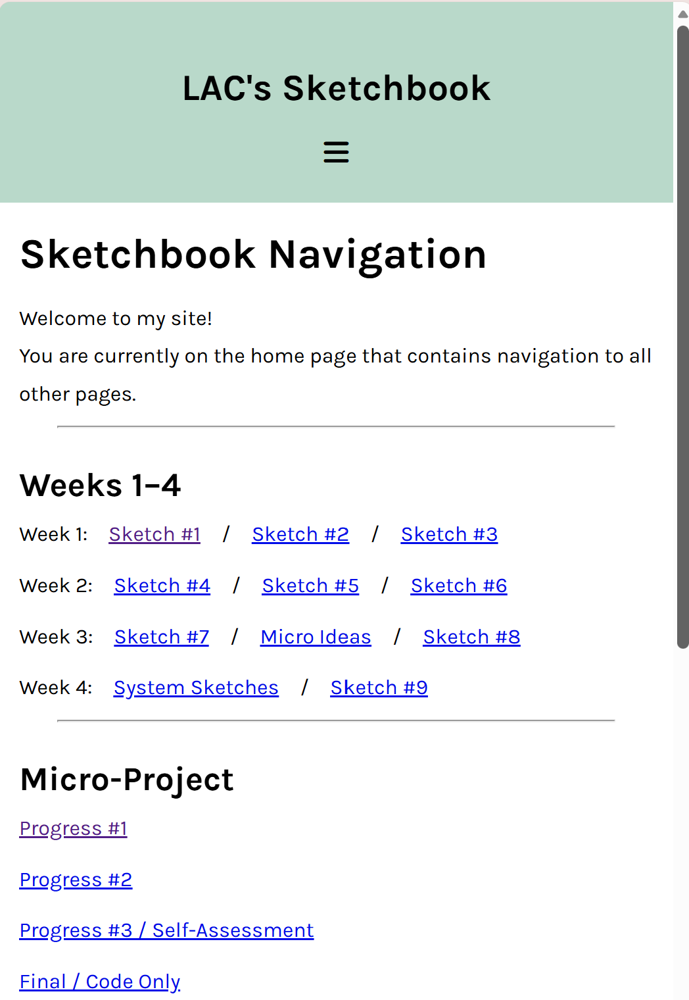
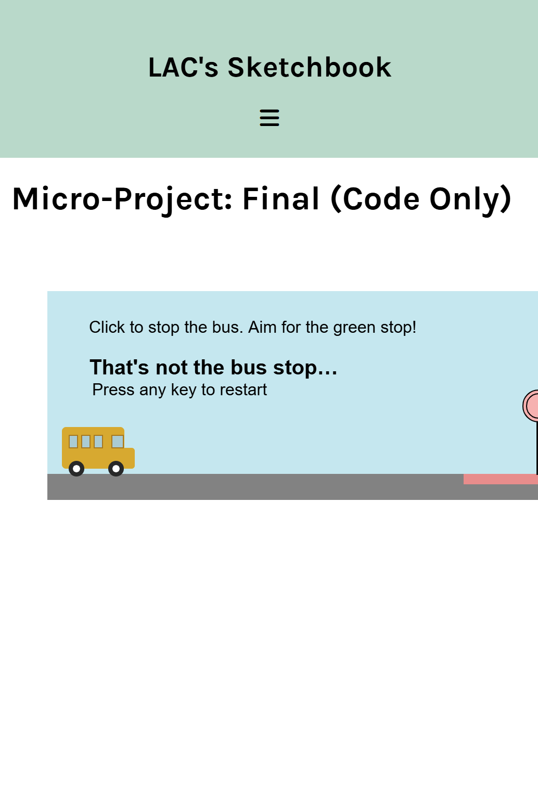

Interface Implementation — Experiment Log
Selected pages with interface implemented:
This page




Main Questions:
What translated cleanly from Figma?
The majority of my code translated cleanly because it was all relatively simple! I already had some “base” CSS on my website that I like to have whenever I’m coding; the additions to that base were the navigation header, two columns on the landing page, and the CSS for mobile screens.
The only thing that I didn’t translate/include from Figma was the rotation function on mobile, since I had no idea how to do the JavaScript for that. Additionally, I didn’t include the working hamburger menu on mobile due to time constraints.
What broke?
The navigation bar broke on me so many times throughout the process! In the end product, there is an error where the dropdown menus overlap since they stay on screen unless you click them again.
Other than that, the only broken code I noticed was the P5 sketch floats off of its usual spot on mobile. This is because I coded a left margin for the sketch that matches the desktop margins only. The P5 sketch also doesn’t fit in the mobile screen, but that’s a problem I didn’t address because I didn’t know how to do the rotation function. In hindsight, I probably could’ve resized it as a quick fix.
What surprised you?
Since I’m pretty comfortable with HTML & CSS, I have been most interested and surprised by the JavaScript of the navigation bar! The W3 site provides this huge block of code to create one dropdown menu and breaks if you have multiple menus. What surprised me is that I found an online post that provided code that works for multiple dropdown menus and is only ONE LINE of code! I have no idea how this code works with only 1–3 lines, but I assume that most of it is built into the HTML somehow.
What structural assumption did the code expose?
I’m not really sure how to answer this question. I guess one example is that the code for my micro-project page exposes that P5 canvases don’t work very easily with CSS.
What would you revise with more time?
I would try coding the hamburger menu on mobile! I believe it would have to be more JavaScript.
Additional Write-up:
What did you try?
More JavaScript! As mentioned above, that’s the code language that I am least familiar with, so I wanted to take this chance to experiment with it more. I mentioned this during the final class, but the fact that our code doesn’t need to be perfect at the end meant that I could try more things and present them as broken without feeling like I was wasting time.
What did you revise?
I took some of the feedback from our last class to fix the mobile CSS, as well as changing the navigation to a hamburger menu (as planned in my Figma). The desktop CSS had only minor typography tweaks since the last version.
What did you learn from the friction?
That I need to do a lot more CSS to change things on mobile! Hearing the feedback about what doesn’t work made me realize just how long the CSS can get for the mobile-sized media queries. The specific friction I’m thinking of is trying to make the spacing not look cramped on mobile, even when it works on desktop.